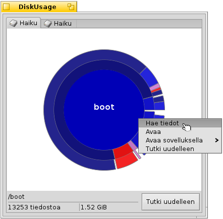

Suomi
Suomi Français
Français Deutsch
Deutsch Italiano
Italiano Русский
Русский Español
Español Svenska
Svenska 日本語
日本語 Українська
Українська 中文 ［中文］
中文 ［中文］ Português
Português Slovenčina
Slovenčina English
English Levyasemakäyttö
Levyasemakäyttö
| Työpöytäpalkki | ||
| Sijainti | /boot/system/apps/DiskUsage | |
| Asetukset | ~/config/settings/DiskUsage |
Levyasemakäyttö näyttää graafisesti kuinka levyasemasi tila on käytetty.
Hyödyllinen työkalu vastaamaan kysymykseen, "Minne kaikki levytilani on mennyt?".

Samankeskiset ympyrät edustavat tiedostojärjestelmähierarkian eri tasoja. Ylinnä, ympyrä keskustassa edustaa /boot/home/-kansiota. Jokainen rengassegmentti välittömästi ympyrän ulkopuolella on tiedosto tai kansio kansion /boot/home/ alapuolella. Jokanen segmentti kauempana ulkona tuo sinut yhden tason syvemmälle tiedostohierarkiassa. Sinun on ehkä muutetttava ikkunan kokoa sopeutumisessa hyvin syviä kansioita varten.
Grafiikan yläpuolella on ponnahdusvalikko, joka sallii sinun vaihtaa kaikkien liitettyjen levyasemien välillä. Ennen kuin levyaseman levykäyttö voidaan näyttää, se on tutkittava. Koska tämä kestää jonkin aikaa laajoilla levyasemilla, voit tutkia toista levyasemaa samalla kun tutkinta suoritetaan taustalla.
- Jos tiedoston tai kansion graafinen esitys muodostaa vähemmän kuin 2 astetta ympyrästä, se jätetään näyttämättä.
- Ilmoitettu kansion sisältämien tiedostojen lukumäärä sisältää myös alikansion tiedostot. Kansio lasketaan tiedostoksi.
- Levyasemakäyttö ohittaa symboliset linkit.
Kun siirrät hiiren kohdistimen segmentin yläpuolelle, tietoja tuosta tiedostosta tai kansiosta näytetään alalaidan tilapalkissa.
Segmentin napsauttaminen hiiren oikealla painikkeella tarjoaa kontekstivalikon , (Seuraajalla), tai tuo kyseinen kansio.
Segmentin napsauttaminen hiiren vasemmalla painikkeella tekee tuon tiedoston/kansion keskusympyräksi.
Napsauttamalla hiiren vasemmalla painikkeella keskiympyrää siirtyy yhden tason ylöspäin.
Voit raahata tiedostoja ja kansioita Levyasemakäytöstä muihin sovelluksiin tai työpöydälle tai toiseen Seuraaja-ikkunaan, jolloin ne kopioituvat. Päinvastoin, Levyasemakäyttöön pudotetut tiedostot tai levyasemat rajautuvat heti sovelluksen uudeksi keskiympyräksi.